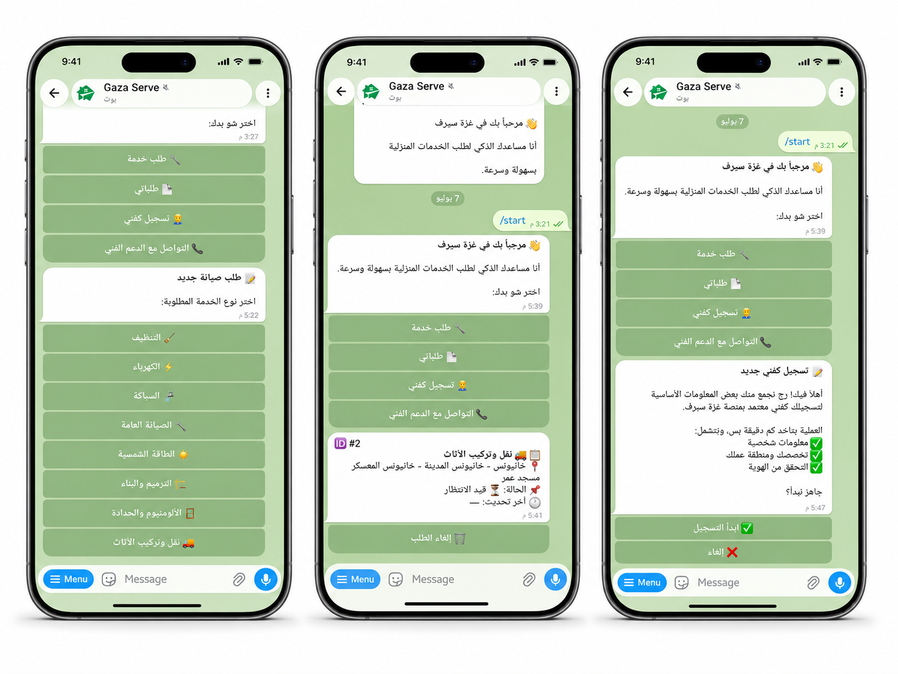

خدمات منزلية في غزة، تربط طالب الخدمة بمقدمها عبر تيليجرام
GazaServe يسهّل على أهل غزة طلب الخدمات المنزلية، ويساعد مقدمي الخدمة على الوصول لطلبات قريبة منهم من خلال بوت تيليجرام خفيف وسهل， مصمم للعمل حتى في ظروف الإنترنت الضعيف.

كل ما يحتاجه منزلك، من خلال بوت واحد
من الصيانة العاجلة إلى الخدمات اليومية، غزة سيرف يساعدك بالوصول للفني المناسب.
الطاقة الشمسية
تركيب وصيانة أنظمة الطاقة الشمسية، البطاريات، والإنفرترات.
كهرباء
تصليح أعطال الكهرباء، المفاتيح، الإضاءة، والأسلاك.
سباكة
تسريب مياه، مواسير، خزانات، وصيانة الحمامات.
صيانة عامة
تصليحات منزلية بسيطة للأبواب، الشبابيك، والأعطال اليومية.
تنظيف
تنظيف منازل، مطابخ، ومساحات بعد الصيانة أو البناء.
الترميم والبناء
إصلاح الأضرار البسيطة، ترميم الجدران، وأعمال البناء الخفيفة.
ألمنيوم وحدادة
تصليح أثاث، رفوف، أبواب، وأعمال خشبية و لحام بسيطة.
نقل وتركيب الأثاث
نقل الأثاث، الفك والتركيب، والمساعدة في الانتقال.
مصممة لأجل غزة
نفهم احتياجات أهل غزة بعمق، ونبني بوت يناسب واقعنا وظروفنا.
استهلاك بيانات قليل
لا يحتاج تحميل تطبيق جديد أو تصفح صفحات ثقيلة.
يعمل مع الإنترنت الضعيف
يعتمد على رسائل تيليجرام الخفيفة والسريعة.
مخصص لمناطق غزة
اختيار المنطقة والحي لتسهيل الوصول للفني القريب.
محادثة سهلة
المستخدم يتعامل مع البوت مثل محادثة عادية بدون تعقيد.
فنيون موثوقون
يساعد الفنيين ومقدمي الخدمات على استقبال طلبات منظمة حسب التخصص والمنطقة.
ست خطوات بسيطة داخل تيليجرام
بدون نماذج معقدة، فقط محادثة واضحة وسريعة.
ابدأ البوت
افتح GazaServe على تيليجرام واضغط Start.
اختر الخدمة
اختر نوع الخدمة مثل كهرباء، سباكة، صيانة أو تنظيف.
حدد منطقتك
اختر المنطقة الرئيسية ثم المنطقة الفرعية داخل غزة.
اكتب العنوان
أدخل عنوانك بالتفصيل ليسهل وصول الفني إليك.
اختر الموعد
حدد اليوم والفترة المناسبة للخدمة.
البوت يبحث عن فني
يبحث النظام عن فني مناسب حسب الخدمة والمنطقة.
تجربة تيليجرام مألوفة وسهلة
قوائم واضحة، أزرار سريعة، ومحادثة مناسبة للمستخدم العربي.

جاهز تستخدم GazaServe؟
سواء كنت تبحث عن خدمة منزلية أو تريد تقديم خدمتك للناس، افتح البوت وابدأ بخطوات بسيطة.
افتح GazaServe Bot